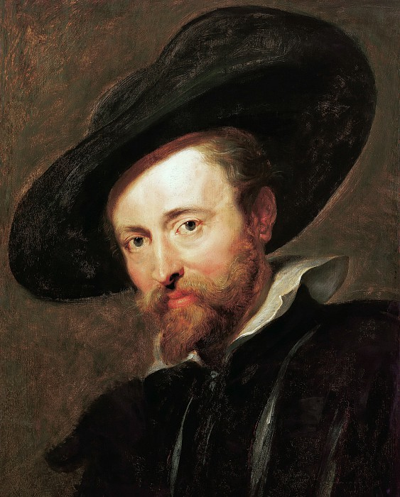

Автопортрет
1626-28г, дерево, масло, 62.2 x 45cм,
Дом Рубенса, Антверпен, Бельгия
Все автопортреты Рубенса написаны без пышности и аксессуаров, свойственных барочным портретам, стиль которых во многом создал и утвердил
в Европе сам художник. Нет в них и вульгарного самолюбованья, скорее они — интимные автобиографии, чем собственное превознесение достоинств и добродетелей живописца.